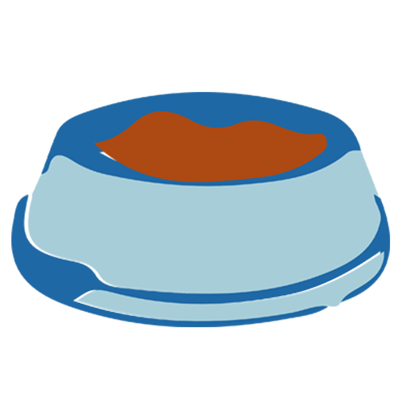
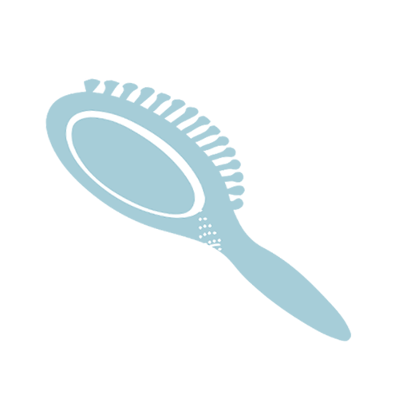
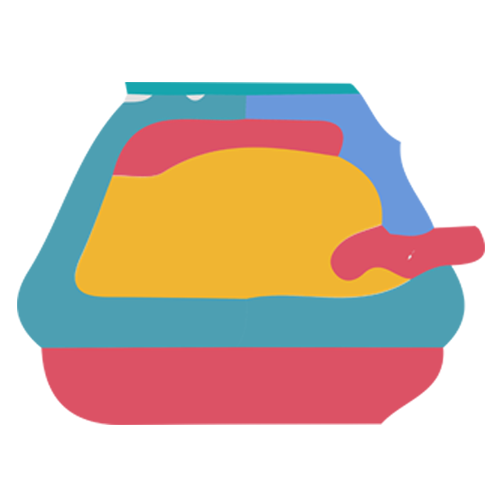
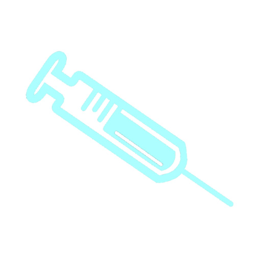

Los gatos son animales de costumbres, así que establecer una rutina cotidiana lo antes posible es lo mejor tanto para ti como para tu felino. Alimenta a tu gatito en el mismo lugar y a la misma hora todos los días, en una zona tranquila donde pueda relajarse, bien lejos de su bandeja de arena. Escoge una superficie que pueda limpiarse con facilidad, o utiliza una esterilla de alimentación para gatitos, y utiliza siempre un bol limpio, ya que los gatos son criaturas muy particulares. Algunos gatitos puede que prefieran comer en un tazón plano o platillo . La comida para gatitos está especialmente formulada con niveles muy altos de proteínas , esenciales para un crecimiento adecuado, así como niveles más altos de calcio, magnesio, fósforo, zinc y hierro para ayudarle a desarrollar huesos y dientes fuertes y sanos. cualquiera que sea el estilo de vida o condición física de tu mascota, hay una comida de gatito adecuada para él. En última instancia, a menos que sea por prescripción médica, decidir si le vas a dar tu gatito comida seca o húmeda está completamente en tus manos.
Cepilla frecuentemente a tu gato para eliminar su pelo muerto y dale malta felina para evitar la formación de bolas de pelo. Con 2 o 3 veces por semana será suficiente y le ayudarás a mantener un buen tránsito gastrointestinal. Existen también piensos especiales para estos casos. Se llaman Hairball, no son medicados y los hay de varios sabores y marcas. No es necesario que bañes a tu gato, ya que los gatos son animales muy limpios que se acicalan continuamente a lo largo del día. Sin embargo, cuanto más lo cepilles mejor será para su piel y su pelo. Tendrá un manto más fuerte, espeso, brillante, sano y sin nudos. Si quieres bañarlo, puedes hacerlo con un champú especial para gatos y secarlo con una toalla o un secador de pelo manual. Generalmente a los gatos no les gusta el agua ¡habitualmente el dueño acaba más mojado que el gato después del baño!.
Para que tu gato haga sus necesidades correctamente lo mejor es educarlo a que utilice el arenero, Lo único que tienes que hacer es comprar una bandeja de plástico y ponerle suficiente arena como para cubrir el fondo (de ser posible, usa el mismo tipo de arena que utilizaba en el criador para que tu gatito reconozca su textura y olor). Enséñale dónde está la bandeja y llévale allí después de las comidas o siempre que detectes síntomas de que tiene ganas de ir al servicio, como por ejemplo, si se agacha o empieza a olfatear el suelo. Se puede favorecer la aceptación de la bandeja sanitaria tomando las siguientes medidas: La bandeja debe ser, preferiblemente, descubierta, de bordes bajos y de tamaño suficiente para favorecer la entrada y salida del gatito. Los desechos deben ser limpiados diariamente y toda la arena debe ser reemplazada al menos 1 vez por semana. La bandeja sanitaria, siempre debe estar alejada del comedero y del bebedero, en lugares tranquilos y de fácil acceso para el gato. Debe haber suficiente cantidad de bandejas para el número de gatos. No olvidemos que la bandeja ideal ha de ser amplia y que permita dar la vuelta dentro a nuestro gato.
La salud de tu gato es muy importante para cuidarlo debes vacunarlo y desparasitarlo siguiendo las indicaciones del veterinario. En general, un adulto debe vacunarse anualmente contra las enfermedades respiratorias, la leucemia y la rabia, aunque las pautas varían en función del sitio en donde residas, y desparasitarse 4 veces al año para evitar los parásitos internos. Para los parásitos externos como las pulgas, piojos o garrapatas existen varios productos de fácil aplicación. Antes de utilizarlos, debemos consultar con un veterinario para elegir el producto que mejor se adapte a tu gato y a tus necesidades. Otro aspecto fundamental es tener cuidado con cables, enchufes, plantas… (podrían ser peligrosas, hay que asegurarse que no sean venenosas para ellos) y también ventanas o si tenemos balcón, que esté asegurado para que no puedan sufrir ningún accidente (tener una red o malla especial, rejillas…etc.). Acondicionar el lugar.
Los gatos son animales de costumbres, así que establecer una rutina cotidiana lo antes posible es lo mejor para ti como para tu felino...
Cepilla frecuentemente a tu gato para eliminar su pelo muerto y dale malta felina para evitar la formación de bolas de pelo...
Para que tu gato haga sus necesidades correctamente lo mejor es educarlo a que utilice el arenero...
La salud de tu gato es muy importante para cuidarlo debes vacunarlo y desparasitarlo siguiendo las indicaciones del veterinario...